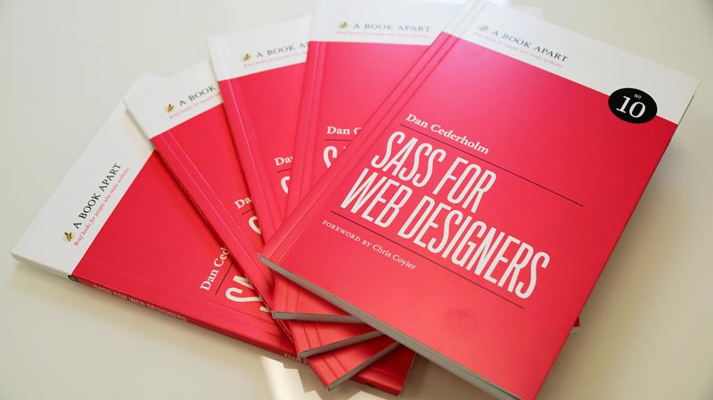

Mobile First & SASS – Account of my learning
What is SASS? What is Mobile First?
I have created a self-initiated project to gain deeper understanding about the above areas in order to build them into my web-developer workflow.
Prior to this project I had a good knowledge of CSS, and I was able to build websites using it. I have not really used SASS (syntactically awesome stylesheets) before, because I was scared of the terminal and its potential disruption in my workflow. At the same time I was frustrated when I had to find and replace a colour in my stylesheet multiple times. Often I did not follow one of the major rule in web development: DRY (Don’t Repeat Yourself). I have not built a large-scale website yet, even though many times I felt, my stylesheets are difficult to manage.
I have read SASS For Web Designers by Dan Cederholm (A Book Apart) to understand the basics of the language. I have discovered that I am able to set variables to certain values (e.g. colours, font-families etc...) and I can use them in my code, thus when I want to change a colour on my website, I only have to change the variable and it does the trick. To avoid repetition, there are @mixins in SASS, which are reusable blocks, and it is also possible to nest different elements and media-queries into each other to follow the DRY principle.
To answer my first question: Sass is a CSS preprocessor—a layer between the stylesheets and the .css files you serve to the browser. Sass plugs the holes in CSS as a language, allowing you to write DRY code that’ll be faster, more efficient, and easier to maintain.
The sass website describes it in the following way: “Sass is a meta-language on top of CSS that’s used to describe the style of a document cleanly and structurally, with more power than flat CSS allows. Sass both provides a simpler, more elegant syntax for CSS and implements various features that are useful for creating manageable stylesheets.”
The website has got an excellent guide for beginners of SASS basics. I have used it as a cheat sheet in this project to remember certain elements.
Mobile First
According to Techchurch, 60% of all online traffic and 40% of all sales were completed on mobile devices on Thanksgiving and it took 54.4% of traffic on Black Friday. Over half of Android and iPhone users spend more than 30 minutes per day using mobile applications. It is clearly visible from this data, that mobile platforms are exploding and there is a need for excellent user experience on these platforms.
What’s the difference between mobile first and desktop first approach?
I have always built my projects before with desktop first approach, as it seemed the easy, natural way of building websites. Firstly I have applied the desktop stylesheets, then I have used max-width media queries to scale down to mobile devices.
Luke Wroblewsky has written an awesome book called Mobile First, that explains the advantages of this approach.
A mobile-first approach to styling means that styles are applied first to mobile devices. Advanced styles and other overrides for larger screens are then added into the stylesheet via media queries. This approach uses min-width media queries.
- References:
- http://techcrunch.com/2015/11/28/thanksgiving-online-sales/
- Luke Wroblewsky – Mobile First
- Dan Cederholm – SASS For Web Designers
- http://sass-lang.com/guide